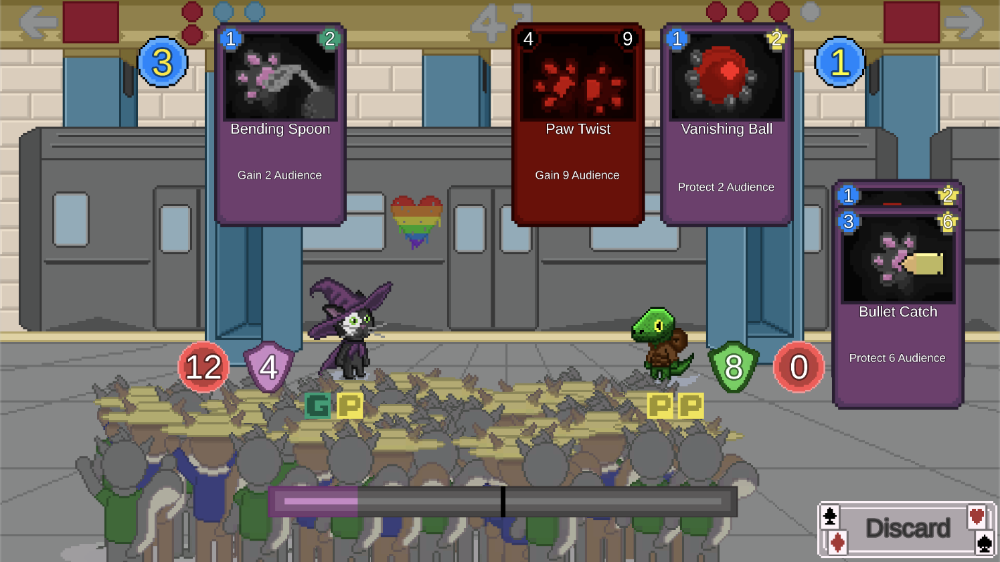
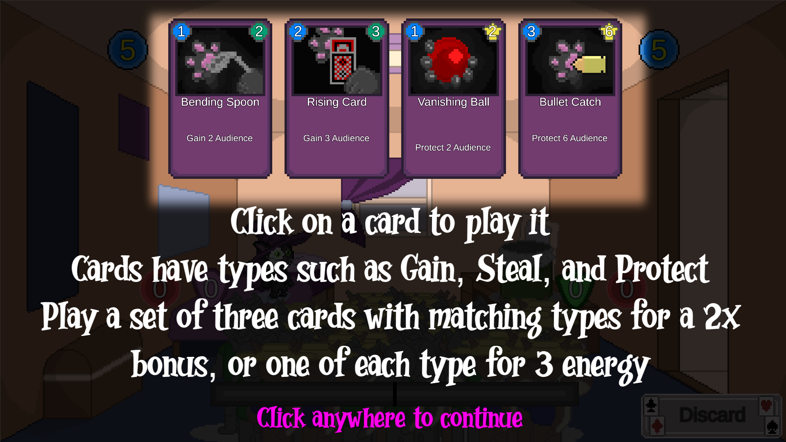
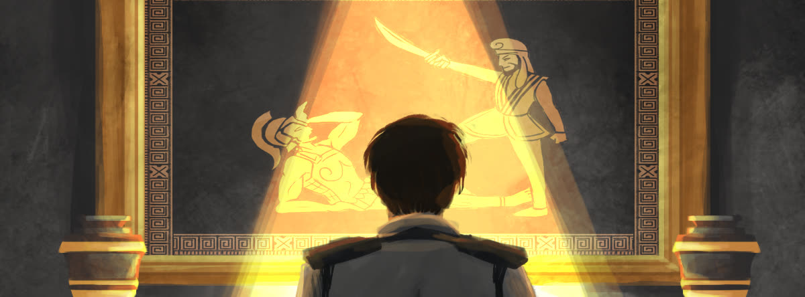
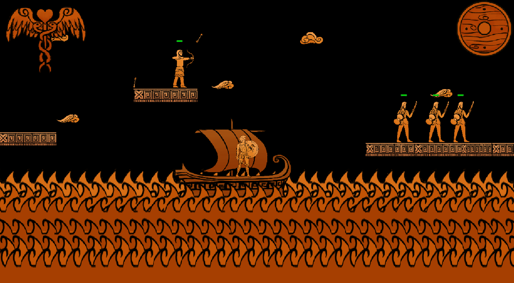
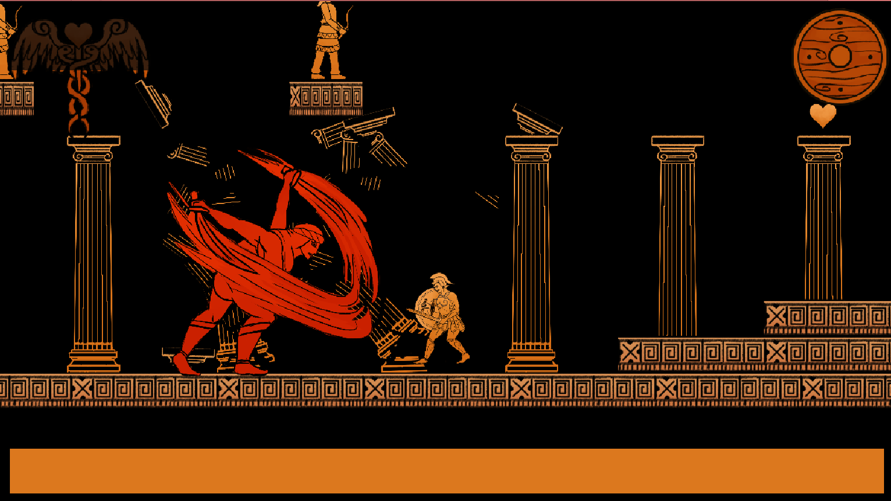
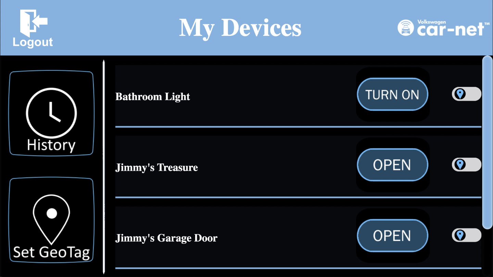
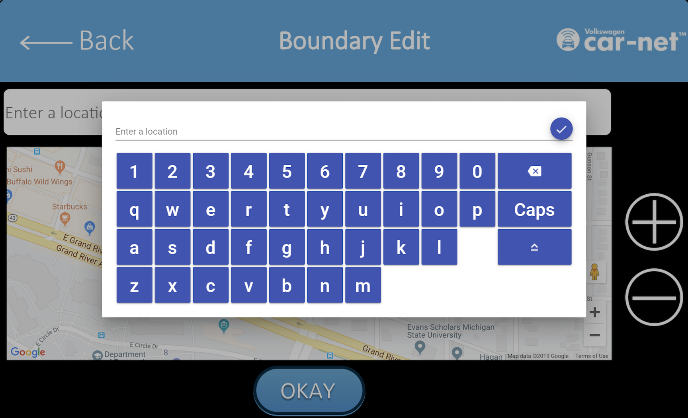

Hello!
 My name is Bryce Archer. I'm a Computer Science Engineer and Game Developer. I have focused work in programming,
mainly Front-End Development and general Software Engineering, and in Gamplay and Audio Engineer.
My name is Bryce Archer. I'm a Computer Science Engineer and Game Developer. I have focused work in programming,
mainly Front-End Development and general Software Engineering, and in Gamplay and Audio Engineer.
Quick links:
Game Development Resume | Software Engineer Resume | School Email (Preferred): archerb2@msu.edu | Personal Email: bryce.archer@att.net | C: (248) 421-1125
Background
I'm currently a Michgian State Senior studying Computer Science and Game Development. I'm expected to graduate in May 2020. Through Michgian State's Game Development program, I have had the opportunity to develop and program many different games with many different mechanics and themes. I have taken the roles of gameplay programmer and audio designer and programmer. I take a lot of joy in the project and content I have created. Through opportunities given to me, I have been able to excel in both Gameplay Programming and Audio Design and Programming.
I have taken roles in Lead Audio and Sound Design on my recent projects. I have had to become familiar with music making and implementation. For theme music, I self-taught myself in making music through mainly Ableton and another tool Logic Pro X. Through this, I have made many differnt themes for games I have helped produce. Using both built in sounds, loops, and synth, I have made my own unique game music. I have also taught myself some music production by combinding this application with electronic keyboards and touch pads known as Roli.
As for sound effects, I have been using both Logic Pro X and another tool Reaper. Using various microphones, such as Blue Snowball, along with some online resources like YouTube to MP3 Converters, I have created unique theme music and sound affects. Below is a link to my SoundCloud, where you will find majority of my sounds.
SoundCloud Link:
I'm currently a Michgian State Senior studying Computer Science and Game Development. I'm expected to graduate in May 2020. Through Michigan State's Computer Science program, I have had the opportunity to develop many different projects in a variety languages, such as Python, C++, C#, HTML and CSS, Javascript, TypeScript, and more. I have also had the opportunity to use many different tools and frameworks such as Angular, webpacks, jQuery, Node.js, and more.
I have had the opportunity to gain much expierence though project and accomplishments. I am familiar with topics like Object Oriented Programming, Front-End Development, SQL/Database Development, Big Data Analysis, and Bluetooth Programming. Using variety of tools, I have both learned and self-taught myself these different topics in order to improve my skills.
Below in the Featured Projects section, click the Other Projects tab to see related Computer Science projects.
GitHub Link:
Featured Projects
Magic Cat in a Purple Hat
 Magic Cat in a Purple Hat is a single player strategy card game where you play as Smudge the cat on his journey to become the best street magician.
Magic Cat in a Purple Hat was developed during the 2019 schoool year. Working along side six other people on a team by the name Purple Hat Productions, our team developed and presented Magic Cat in a Purple Hat as our MI 497 project, Game Design Studio, at Michigan State University.
I served as Lead Audio Designer and as a Gameplay Programmer.
 As Lead Audio Designer, I was in charge of the following:
As a Gameplay Programmer, I helped the Lead Programmer with the following:
Paintings of Athena
 Paintings of Athena is a single player platforming game where you are sent back to Ancient Greece and choosse to fight for Athens or Sparta.
Paintings of Athena was my first project in Michigan State's Game Devolpment program. Working along side four other people for roughly four weeks, we created and presented this as our big first production. This was the first time I encountered Video Game Music Production.
I served as Lead Audio Designer and as a Gameplay Programmer.
 As Lead Audio Designer, I was in charge of the following:
As a Gameplay Programmer, I helped the Lead Programmer with the following:
Robo Re-Die-Wrecked
Coming May 2020
VW Car-Net Smart Hub Web App
 Using our web app, a driver encompasses their house with a so called geo-fence, which is simply a geographic area that triggers an action when the border of the geographic area is crossed. Once set, the garage door automatically opens when the vehicle crosses this border when approaching the house, and automatically closes when the vehicle crosses the geo-fenced border when leaving the house.
In addition, our app also supports other Chamberlain smart home devices such as lights, gates and door locks.
 As Lead Front-End Programmer, I helped with the following: